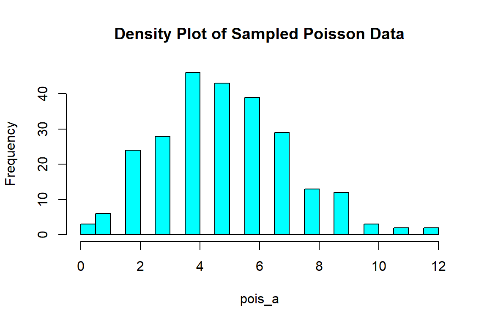

Chapter 2. Exploratory Data Analysis, Probability Models and Basic Inference
Section 1. Exploratory Data Analysis
Exploratory Data Analysis (EDA) is a term proposed by the statistician John Tukey in the 1970’s. The aim of EDA is to explore the data first in order to understand the data structure by using graphical and quantitative tools.
Among the quantitative tools are the calculation of center tendency measures (mean, median and mode) and variability measures (variance, standard deviation, range, coefficient of variation, inter-quantile range).
Among the graphical tools are the graphics to propose potential probability models for the data set and detection of potential outliers (histograms and boxplots). An additional aim of EDA is to detect missing data. The researcher or data manager needs to take a decision on which methodology to apply to deal with missing data.
If the variable of interest is categorical, other graphical tools are more appropriate like the use of Barplots. Barplots will have the variable categories in the x axis, and the raw frequencies or relative frequencies in the y axis.
In a multivariate case, scatter-plots are very important for visualization of the relationships among the variables.
library(ggplot2)
Warning: package 'ggplot2' was built under R version 4.3.3
# set seedset.seed(123)data_hw <-read.csv("data/hw_factors.csv")# Assuming data_hw is your data frame# Selecting relevant columnssubset_data <- data_hw[, c("pulses", "mean_intensity", "mean_duration")]# Creating scatter plotspar(mfrow =c(1, 3)) # Setting up a 1x3 layout# Scatter plot 1: Pulses vs. Mean Intensityplot(subset_data$pulses, subset_data$mean_intensity, xlab ="Pulses", ylab ="Mean Intensity", main ="Pulses vs. Mean Intensity")# Scatter plot 2: Pulses vs. Mean Durationplot(subset_data$pulses, subset_data$mean_duration, xlab ="Pulses", ylab ="Mean Duration", main ="Pulses vs. Mean Duration")# Scatter plot 3: Mean Intensity vs. Mean Durationplot(subset_data$mean_intensity, subset_data$mean_duration, xlab ="Mean Intensity", ylab ="Mean Duration", main ="Mean Intensity vs. Mean Duration")
Mean Air Temperature for Champaign
The Mean Air Temperature data set was discussed in Chapter 1.
We use this data set to perform an exploratory data analysis and perform some inference about the population parameters.
Descriptive Statistics
Probability Models
One of the main assumptions when we handle environmental variables is to deal with the issue of uncertainty. From the statistical point of view we will be assuming that many environmental variables are random variables. An immediate goal is to propose a probability model for the study variables.
The normality assumption is a central assumption in most inference procedures. A first step in our analysis is plotting the data to understand their probability distribution.
library(ggplot2)# set seedset.seed(123)# create dataframedf <-data.frame( category=factor(rep(c("mean=10, sd=2","mean=12, sd=5"),each=500)),value=round(c(rnorm(500, mean=10, sd=2),rnorm(500, mean=12, sd=5))))# Basic density plot with custom colorggplot(df, aes(x=value, color=category)) +# color property for changing color of plot# geom_density() function plots the density plotgeom_density()
Common Distributions and Sampling Using R
You can generate samples using the r_distribution operation. You can specify the parameters and the number of samples generated.
Normal Distribution
The normal distribution, also known as the Gaussian distribution, is a symmetric bell-shaped curve commonly used to model continuous data with mean and standard deviation parameters. A random variable \(X\) has a Normal distribution if its probability density function(pdf) is of the form:
where \(\mu=E[X]\) and \(\sigma^2=Var[X]\) are the mean and variance of the pdf, and the random variable \(X\) can take values in the interval \((-\infty,\infty)\).
\(\mu\) and \(\sigma^2\) are also called the location and dispersion parameters of the Normal distribution.
# Generate density values for a normal distributionx <-seq(-4, 4, length.out =1000) # Specify the range of x valuesdensity <-dnorm(x, mean =0, sd =1) # Mean = 0, Standard Deviation = 1# Plot the normal bell curveplot(x, density, type ="l", lwd =2, col ="black", xlab ="x", ylab ="Density", main ="Normal Distribution Probability Density Function")
You can sample from any known distribution using the r+distribution() function in r:
# Sample 250 values from a normal distribution with mean=5 and standard deviation of 2 norm_a <-rnorm(n =500, mean =5, sd =2)# Create a histogram without plotting ithist_data <-hist(norm_a, breaks =20, plot =FALSE)# Create a histogramhist(norm_a, breaks =20, col ="cyan", main ="Sampled Data with a Normal Curve", xlab ="Values", ylab ="Frequency")# Add a normalized normal curvecurve(dnorm(x, mean =mean(norm_a), sd =sd(norm_a)) *diff(hist_data$breaks)[1] *length(norm_a), add =TRUE, col ="red", lwd =2)
# Set the width and height of the plotoptions(repr.plot.width =6, repr.plot.height =4)
The symmetric bell curve can be observed from the histogram, which is symmetric about \(\mu\).
You can also plot the density curves using ggplot for sampled points.
# Create a dataframe of several normal variables with different parametersdf <-data.frame(category =factor(rep(c("sample1", "sample2", "sample3"), each =500)),value =round(c(rnorm(500, mean =100, sd =5),rnorm(500, mean =95, sd =10),rnorm(500, mean =105, sd =20))))# Remember to load the librarylibrary(ggplot2)# Customize density plotggplot(df, aes(x = value, fill = category)) +geom_density(alpha =0.5, color ="black", linewdth =0.5) +scale_fill_manual(values =c("sample1"="orange", "sample2"="green", "sample3"="cyan")) +labs(x ="Value", y ="Density", title ="Density Plot by Category") +theme_minimal()
Warning in geom_density(alpha = 0.5, color = "black", linewdth = 0.5): Ignoring
unknown parameters: `linewdth`
Poisson Distribution
The Poisson distribution describes the number of events occurring in a fixed interval of time or space, often used for counting rare events with a known average rate. Note that a poisson variable can only take positive integer values.
pois_a <-rpois(n =250, lambda =5)hist(pois_a, breaks =20, col ="cyan", main ="Density Plot of Sampled Poisson Data")

Exponential Distribution
The exponential distribution models the time between events in a Poisson process, describing the probability of waiting a certain amount of time until an event occurs. It’s often used for survival analysis and reliability studies.
\[f(x; \lambda) = \lambda e^{-\lambda x}, \quad x \geq 0\]
exp_a <-rexp(n =250, rate =0.5)hist(exp_a, breaks =20, col ="cyan", main ="Density Plot of Sampled Exponential Data")
Beta Distribution
The beta distribution is versatile and used to model data between 0 and 1, often representing proportions, probabilities, or proportions of successes in a sequence of independent Bernoulli trials.
beta_a <-rbeta(n =250, shape1 =2, shape2 =5)hist(beta_a, breaks =20, col ="cyan", main ="Density Plot of Sampled Beta Data")
Gamma Distribution
The gamma distribution is flexible and applicable to various contexts, including modeling time to events, income data, and more, characterized by shape and scale parameters.
where \(\mu=E[X]\) and \(\sigma^2=Var[X]\) are the mean and variance of the pdf, and the random variable \(X\) can take values in the interval \((-\infty,\infty)\).
For many applications we assume that a sample from an environmental continuous random variable \(x_1,x_2,\ldots,x_n\) has a Normal distribution if its empirical cumulative distribution function does not differ too much from the theoretical Cumulative Normal Distribution function \(F(x)=P(X\leq x)\).
Usually environmental variables are positive variables and are skewed (distribution is non-symmetric). Working with a transformed variable of the original variable \(X\), as for example, \(Y=\log(X)\) can solve the lack of normality, and \(Y\) will have a range in the interval \((-\infty, \infty)\). If \(Y\) is normally distributed, the variable \(X\) will be log-normally distributed.
Histograms, QQ-plots and PP-plots
Histograms, QQ-plots, and PP-plots are graphical tools commonly employed in statistical analysis to understand and visualize the distribution of data. A histogram provides a visual representation of the frequency or density of values within different intervals, offering insights into the shape and spread of the data. QQ-plots (Quantile-Quantile plots) serve to assess how well a dataset aligns with a theoretical distribution by comparing quantiles of the observed data with those of the expected distribution. Meanwhile, PP-plots (Probability-Probability plots) focus on comparing cumulative distribution functions, aiding in the identification of deviations from expected patterns. Together, these tools offer a practical means to explore, interpret, and validate the statistical properties of datasets.
Histograms
A histogram is a graphical representation of the frequency distribution of the sample. Values in the y axis can be raw frequencies or relative frequencies. Below, we show the temperature in March.
# Load weather datadata_cmi <-read.csv("data/CMI_TRH.csv")# Do this to convert string to date formatdata_cmi$date <-as.Date(data_cmi$date, format ="%m/%d/%Y")# Subset the data for month 3data_cmi_month3 <-subset(data_cmi, format(date, "%m") =="03")# Create a histogram for average air temperaturehist(data_cmi_month3$avg_air_temp_c,main ="AVG Air Temperature in March",breaks =20,xlab ="Value",ylab ="Frequency",col ="lightgreen")
# Set up a 3x4 grid for 12 plotspar(mfrow =c(3, 4), mar =c(4, 4, 2, 1))# Loop through each monthfor (m inunique(data_cmi$month)) {# Subset data for the current month month_data <-subset(data_cmi, month == m)# Create a histogramhist(month_data$avg_air_temp_c, main =paste("Histogram for Month=", m), breaks=20,xlab ="Average Air Temperature [C]", col ="lightgreen", probability =TRUE)# Add a bell curvecurve(dnorm(x, mean =mean(month_data$avg_air_temp_c), sd =sd(month_data$avg_air_temp_c)),add =TRUE, col ="red", lwd =2)}
# Reset par settingspar(mfrow =c(1, 1), mar =c(5, 4, 4, 2) +0.1)
We can see that the temperatures in a month usually follow a normal distribution
QQ-plots
A QQ-plot compares the quantiles of a data distribution with the quantiles of a standardized theoretical distribution from a specified family of distributions, e.g., the standard normal distribution. In this case the y-axis is the quantiles of the data distribution, and the x-axis is the quantiles of the standard normal distribution.
Assume a sample is generated from a certain distribution. Data is sorted in increasing order \(y^{(1)}, y^{(2)},\ldots, y^{(n)}\), and a plotting position is calculated for each value as:
\[\hat{P}(Y\leq y^{(i)})=\frac{i-0.5}{n}\]
The plotting position represents the proportion of observations below a specific data value.
# Simulations from a normal distributiony <-rnorm(100)n <-length(y)yp <- ((1:n) -0.5)/n#quantiles of a standard normalzq <-qnorm(yp, mean=0, sd=1)
plot(zq, sort(y), xlab="Standard Normal Quantile", ylab="Data")abline(mean(y), sd(y))
qq-plot
The above calculation is equivalent to:
qqnorm(y)qqline(y)
qq-plot
As seen from the QQ plot, the data points closely follow the diagonal line, which suggests that the distribution of the data approximates a normal distribution. This alignment indicates that the quantiles of our dataset match well with the quantiles of a normal distribution。
PP-plots
A PP-plot compares the empirical cumulative distribution function of a data set with a specified theoretical cumulative distribution function \(F(.)\)
In this case the values of theoretical distribution function \(F(y^{(i)})\) are plotted against the plotting positions of the ordered data.
The construction of a QQ-plot does not require the specification of the location and the scale parameters of the distribution, while the PP-plots requires this specification to evaluate the cdf at the ordered data values.
The Central Limit Theorem
Sampling Distribution
A statistic is a function of a sample, and since the sample values are the outcomes of a random variable, the statistic is also a random variable, for example: the sample mean (\(\bar{x}=\frac{\sum_{i=1^n}}{x_i{n}}\)).
Other statistics as the sample median of a sample are a function of the sample and they are considered random variables. We can talk about the sampling distribution of the sample median or any other statistic.
According to the Central Limit Theorem, the sampling distribution of the sample mean is a Normal distribution \(N(\mu, \sigma^2/n)\).
Sampling distributions are important for statistical inference since they are used in hypothesis testing and for building confidence intervals.
The normal distribution is so important in many applications due to the Central Limit Theorem.
This theorem establishes that if you have a sample \(x_1, x_2, \ldots, x_n\) from a population, not necessarily normally distributed, the sum of values or sample mean (sum corrected by the sample size) is going to have a Normal distribution with mean equal to \(\mu\) and variance = \(\sigma^2/n\), where \(\mu\) and \(\sigma^2\) are the mean and variance of from the population distribution.
From figure X, you can see the sampling distribution approximately forms a normal distribution.
Distribution of Mean Heat Wave Duration
Statistical Inference
Statistical inference is ?
Introduction to Hypothesis Testing
Hypothesis testing is a statistical inference approach that uses sample data to draw conclusions about either a population parameter or probability distribution. The null hypothesis (\(H_0\)), and the corresponding alternative hypothesis (\(H_a\)), representing the opposite assertion, are formed initially. From the sample data, the procedure determines if there’s evidence to reject \(H_0\). If \(H_0\) is rejected, the statistical inference favors \(H_a\).
Motivating Example
Suppose we have a coin and we want to test if it is a fair coin. We toss it 10 times, and we only have 2 tails and the rest are heads. Now we can use the concept of hypothesis testing for our purpose.
The null hypothesis would be that the coin is a fair coin, which means \(P(H) = P(T) = 0.5\). Therefore, the alternative hypothesis is that the coin is not a fair coin. Under the null hypothesis, which is that the coin is fair, the probability of having 2 tails and 8 tails from 10 tosses is
\[P = {10 \choose 2 } = 0.5^2 0.5^8 = 0.0439\]
The probability under the null hypothesis is very low. If we give a threshold, which specifies how low is “too low” for the probability that the sample occurs, we can determine if we choose to accept the null hypothesis or reject it. If our threshold is \(0.05\), then we will reject the null hypothesis, which means we refuse to believe that the coin is a fair coin. The reasoning is that if the coin is fair, then it would be almost impossible to see samples like this.
The key concepts in hypothesis testing can be categorized as follows:
Standard errors
The term standard error is used when we refer to the standard deviation of the sampling distribution of a statistic.
**Standard error of the sample mean:
The standard error of the sample mean is the standard deviation of the sample mean denoted as: \(\sigma_{\bar{x=\sigma/\sqrt{n}}}\)
Type I and II errors
We normally assume that the Null Hypothesis is correct before making the test, and fix a small type I error which is the Probability of Rejecting the Null hypothesis assuming that \(H_0\) is correct:
Type I error (false positive): $ P(Rejecting; H_0| H_0; is; True)=$
Type II error (false negative): \(P(Not\;Rejecting\; H_0| H_0\; is\; False)=\beta\)
We normally control \(\alpha\), which is the level of significance of the test
P-value
The P-value is the probability of finding a test statistic \(T\) as extreme or more extreme that the observed value assuming that the null hypothesis is correct. If that probability is lower than a significance level \(\alpha\) we say that the data does not support the Null hypothesis assumption.
Given a significance level \(\alpha\) we reject the null hypothesis if:
For all tests a p-value is calculated. If the p value is less than the chosen significance level (\(\alpha\)), then the null hypothesis is rejected and there is evidence that the data tested are not coming from normally distributed population. On the other hand, if the p value is greater than the chosen significance level, then the null hypothesis (that the data came from a normally distributed population) can not be rejected.
Confidence Interval
The previous equation can lead to a wrong interpretation of the confidence interval, since it might appear like the probability of the parameter \(\mu_1-\mu_2\) lying between the lower and upper limit indicated above is 95%. That interpretation is incorrect, because according to the frequentist framework, the parameter\(\mu_1-\mu_2\) is not a random variable since it is a population parameter.
The limits of the Confidence Interval are random numbers because they depend on the sample and you will have different values if you have a different samples. The correct interpretation uses the idea of repeated sampling: If we have 100 hundred independent samples from a population and calculate a CI for each sample, 95 of the 100 CIs would contain the true population statistic \(\mu_1 - \mu_2\).
Example of Two-tailed One-sample Z-test
In this example we show the 2-tailed one-sample z test as an illustration of hypothesis testing. The one-sample z test is usually used to test if the sample mean is significantly different from the population mean. Z-test usually requires that the sample size is greater than 30, and the population standard deviation \(\sigma\) is known.
We are testing if the sample mean is significantly different from 50. So our null hypothesis is that the sample mean is not different from 50, and the alternative hypothesis is that the sample mean is different from 50.
We first generate fake data from a normal distribution with mean=55 and standard deviation of 28:
We then use the decision rule to determine if we should reject the null hypothesis. The p-value is calculated as:
p_z <-2* (1-pnorm(abs(z_score)))cat('The p-value is ', p_z)
The p-value is 0.005091127
The p-value is very small and less than 0.05, so we reject the null hypothesis and claim that the sample mean is significantly different from 50. The result of the hypothesis test also matches our initial construction (we sampled from a normal distribution with mean = 55).
This is the caption for this plot
Testing for Normality
When using a hypothesis testing approach we use a function of the sample data (test statistic) to make a decision about an assumption on a population distribution or a population parameter.
In this case the assumption (null hypothesis \(H_0\)) assumes that the data is a sample from a Normally distributed population, while the alternative hypothesis (\(H_a\)) assumes the opposite statement.
This is:
\[
\begin{align*}
H_0: & \quad \text{Data is a sample from a Normal Distribution} \\
H_a: & \quad \text{Data is not a sample from a Normal Distribution}
\end{align*}
\]
Goodness for Fit tests for the Normal Distribution
Shapiro-Wilks: The statistic \(W_n\) is the ratio of the best estimator of the variance (based on the square of a linear combination of the order statistics) to the corrected sum of squares estimator of the variance. Values of \(W_n\) are between 0 and 1.
Small values of the statistics lead to a rejection of the null hypothesis.
Tests based on the Empirical Distribution Function (EDF Tests):
These tests measure the discrepancy between \(F(t)\) and \(\hat{F(t)\).
Kolmogorov-Smirnoff (\(D\))
Anderson Darling (\(Q\))
Cram’er von-Mises (\(W^2\))
All these statistics measure the departures of the ECDF from the theoretical CDF. Large values of these statistics would lead to the rejection of the Null hypothesis.
Location Tests
One-Population location tests
In all cases an independent and identically distributed (iid) sample of a population is available and we want to test a particular assumption about the location parameter \(\mu_0\)
Test
Population Assumption
Location parameter\(\mu_0\)
Student’s t
iid, N(\(\mu\), \(\sigma^2\))
mean (same as median)
Signed Rank
iid, symmetric distribution
median
Sign
iid
median
Hypothesis Testing on a Population Mean \(\mu\)
We assume that we have independent samples from a normal population with mean \(\mu\) and variance \(\sigma^2\). We want to test the hypothesis \(H_0: \mu = \mu_0\).
The alternative hypothesis can be:
\(H_a: \mu \neq \mu\_0\) (Two-tailed test)
\(H_a: \mu > \mu\_0\) (Right-tailed test)
\(H_a: \mu < \mu\_0\) (Left-tailed test)
If the standard deviation \(\sigma\) is unknown we use the t-statistic:
\[T= \frac{\bar{x} - \mu_0}{s/\sqrt{n}}\] where \(\bar{x}\) is the sample mean and \(s\) the the sample standard deviation.
Under the normality and independence assumptions \(T\sim \mbox{t-student}\) distribution with \(n-1\) degrees of freedom.
Example of One-sample T test in r
Suppose we want to test if a list of weights normally distributed has a mean of 150 pounds
# Generate samples for testingweights_1 <-round(rnorm(10, mean =150, sd =20))# print out the samplesprint(weights_1)
[1] 116 176 139 131 169 165 157 146 145 157
# Perform one-sample t-testt_test_1 <-t.test(weights_1, mu =150)# Print the results of the t-testprint(t_test_1)
One Sample t-test
data: weights_1
t = 0.017209, df = 9, p-value = 0.9866
alternative hypothesis: true mean is not equal to 150
95 percent confidence interval:
136.955 163.245
sample estimates:
mean of x
150.1
You can observe that the test gives a p-value of 0.33, which allows us to accept the null hypothesis and claim that the mean is 150.
However, if we generate the samples with mean=120, the t test will give us a p-value that rejects the null hypothesis
# Generate samples for testingweights_2 <-round(rnorm(10, mean =120, sd =20))# print out the samplesprint(weights_2)
[1] 112 109 149 99 100 99 108 131 114 106
# Perform one-sample t-testt_test_2 <-t.test(weights_2, mu =150)# Print the results of the t-testprint(t_test_2)
One Sample t-test
data: weights_2
t = -7.4236, df = 9, p-value = 4.002e-05
alternative hypothesis: true mean is not equal to 150
95 percent confidence interval:
101.3338 124.0662
sample estimates:
mean of x
112.7
Two-population location tests
The main interest is on comparing the location parameters from two population distributions \(\mu_1\) and \(\mu_2\).
A common hypothesis is \(H_0: \mu_1 = \mu_2\).
The alternative hypothesis can be:
\(H_a: \mu_1 \neq \mu_2\) (Two-tail tests)
\(H_a: \mu_1 > \mu_2\) (Right-tail test)
\(H_a: \mu_1 < \mu_2\) (Left-tail test)
Assuming that the we have two iid samples from populations 1 and 2 with unknown variances \(\sigma_1^2\) and \(\sigma_2^2\); and sample means \(\bar{x}_1\) and \(\bar{x}_2\) and sample variances \(s_1^2\) and \(s_2^2\), the following test statistics can be used:
Distributions have equal shape, different location
Wilcoxon’s Rank-Sum test
Exact for small \(n\), Normal approx. for large \(n\)
For a given level of significance \(\alpha\) since the t-Student is a symmetric distribution one can say that: \[P((|T|\leq t_{df; \alpha/2})=1-\alpha\]
By inverting this probability equation we get an expression for the \((1-\alpha)\) 100% Confidence Interval:
# Perform a two-sample t-testt.test(weights_1, weights_2, var.equal =FALSE)
Welch Two Sample t-test
data: weights_1 and weights_2
t = 4.8686, df = 17.632, p-value = 0.0001306
alternative hypothesis: true difference in means is not equal to 0
95 percent confidence interval:
21.23684 53.56316
sample estimates:
mean of x mean of y
150.1 112.7
You can see that the 2-sample test shows a p-value of 0.015, which means we should reject the null hypothesis and claim the mean weights for the 2 groups are different.
Measures of Linear Association
In climate data analysis, we frequently need to test the independence between two variables.
Pearson’s Correlation Test for Independence
Correlation is a simple and straight-forward indicator of the dependence between two variables. The magnitude of the correlation is proportional to the strength of dependence between the two variables. Borrowing this idea, we could set up the correlation test for independence. Recall the expression for the sample estimate of correlation between \(X\) and \(Y\) is:
By theory, \(t\) would follow a t-distribution with \(n-2\) degree of freedom. To test for independence, we would want to use the t-test decision rule to determine if \(\hat{\sigma}^2 = 0\). This requires us to perform a 2-sided t-test, which means we should reject the null hypothesis of independence if
\[|T|\leq t_{df; \alpha/2}\]
Chi-sq Test for Independence
The chi-square test for independence is a statistical method used to determine if there is a significant association between two categorical variables. It assesses whether the observed distribution of frequencies in a contingency table differs from what would be expected if the variables were independent. In other words, it helps us understand if changes in one variable are related to changes in another. The test is based on the chi-square statistic, which compares the observed and expected frequencies. If the calculated chi-square value is sufficiently large, it suggests a significant association between the variables. This test is widely employed in fields such as sociology, biology, and market research to explore relationships between categorical variables and make informed inferences about populations based on sample data.
Truck Sedan
Male 24 51
Female 13 42
# Perform the chi-square test for independenceresult <-chisq.test(fake_data)# Print the test resultscat("Chi-Square Test for Independence Results:\n")
Chi-Square Test for Independence Results:
print(result)
Pearson's Chi-squared test with Yates' continuity correction
data: fake_data
X-squared = 0.71804, df = 1, p-value = 0.3968
We can see that because of the high p-value we don’t reject the null hypothesis and we should claim that there is no significant association between gender and types of cars they drive.